|
Amaz
- Back to Amaz main page -Model Description - go to ResultsModel descriptionFirst entry by the land tenure and the land use In the Amazon, few farms are exclusively dedicated to livestock. Although the pasture productivity is good during the first 2-3 years, a farmer prefers, in most cases, grow a subsistence production on fresh slashed and burnt plots: it ensures food security and the income will cover the implementation cost of the pasture. Even for ranching, farming subsistence is the initial step before the pasture. Furthermore, the most practiced technique to recover an old pasture is to turn it into food crops during one or two seasons, thus providing complementary animal fodder. Finally, the contraction of forest plots in older properties, as well as the application of environmental law oblige some farmers to reduce deforestation by intensifying their land use with a crop - pasture cycle. They also seek to expand their farm by buying new fields in order to remain under the legal threshold of deforestation. Second entry by the workforce The availability of the family labor is a key element of success or failure of the settlement on the front. Ludovino (2002) shows that a family of 3-4 workers (a couple with two teenagers) has more chance to succeed that a couple with two young children. A disease or an accident that invalidates a person for several weeks has more impact for a family with few workers. In addition, some activities (slash, movement of the herd, harvest...) require two or three persons. Finally, the sale of a portion of its workforce facilitates family life. Thus, successful settlements on the pioneer fronts are often due to large families. 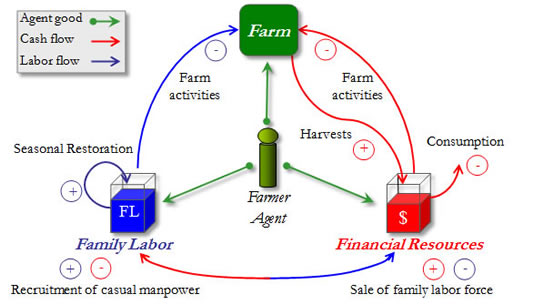
Structure of the modelAmaz is structured in two parts corresponding to the previous paragraphs. The Land package represents the spatial organization of the land. Situated along a side road, a lot of colonization of 100 ha is divided into 400 m2 plots. Each plot is assigned with a soil type, a slope and a land cover: forest, fallow, annual or tree crop, perennial or pasture. 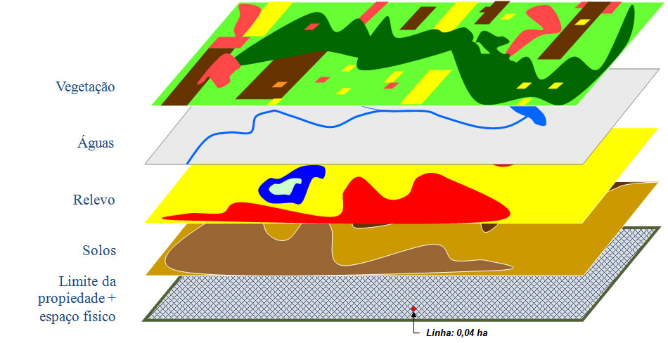 The herd is distributed on the pastures with a mean value of one livestock unit per hectare (for the basic version without intensification). Each cover has technical and economical attributes, its own dynamics, several requirements linked to its manpower needs and farm inputs, and a production value. Each season, it generates a production, which is immediately converted into cash at harvest time. But without maintenance, productivity decreases until disappearing. An agent (a family of N members) has two main features: his labor-force and his money. He uses his family labor to achieve the agriculture works on the farm or to sell it as external manpower. This labor-force corresponds to an amount of available working days that decreases with the performed tasks. This quantity is reset to its maximum at the beginning of the year. If he receives money at the harvest time, he spends a part of it for the family consumption, for all farming operating costs including the purchase of cows and for temporary labor employment. A family is associated with a strategy that consists in performing farm activities oriented towards agricultural preferences. The strategies of the model are Breeder, perennial Planter, Grower and Diversified. For example, by choosing to be Grower or Breeder, a family cultivates his land favoring his specialty. But this choice does not necessarily mean to neglect the other crops already present on the farm. Each year, the agent starts by performing its essential activities; afterward he does the activities related to its priority. Thus, even if his strategy is Planter, an agent begins cultivate a few parcels of annual crops for his food security and performs its basic rancher tasks (minimum management of the herd and the pastures). The rest of his labor force is then dedicated to his perennial crops. Main class diagram (click to enlarge) 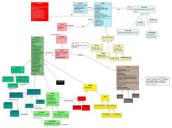 DynamicsScheduling Sequence diagram (click to enlarge) 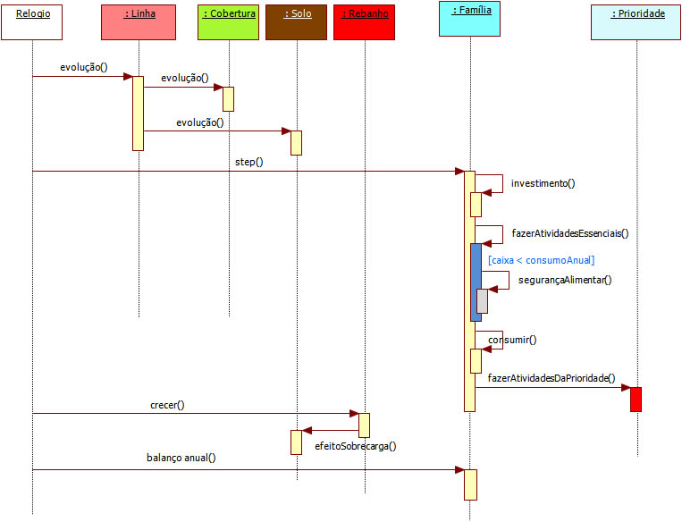 The following state-transition diagram shows all the different covers that are designed in the model and the different ways they evolve and change, through transitions. The red transitions correspond to human activities (cutting, planting...). State Transition diagram of land cover (click to enlarge) Scenario 0: The following activity diagram presents the organization of Scenario 0. (click on sub-activities to get a focus on them) 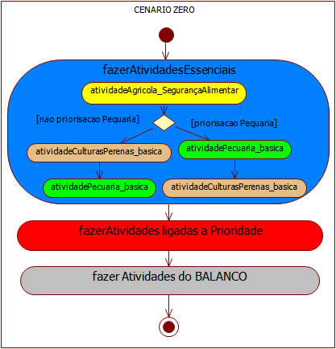 Scenario 1: The following activity diagram presents the organization of Scenario 1. (click on sub-activities to get a focus on them) 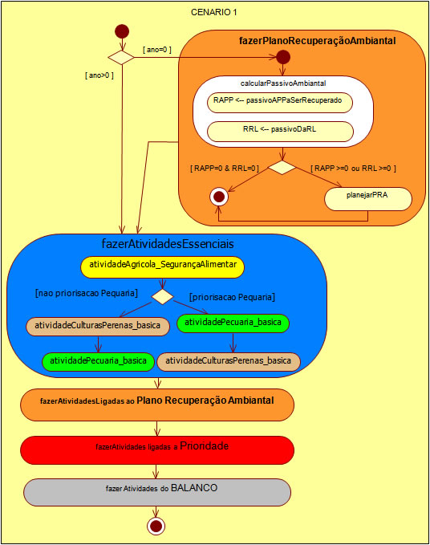 Behaviours of the agentsEssential activitiesActivity diagram of the Food Security: 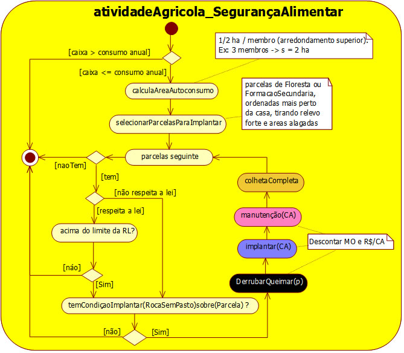 Essential basic activities for the maintenance of livestock and pastures: 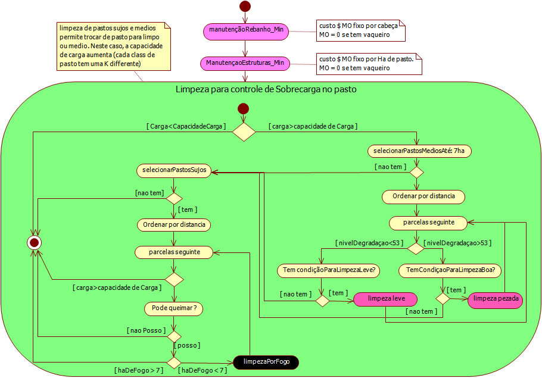 Essential basic activities for the maintenance of perennial crops (cacau): 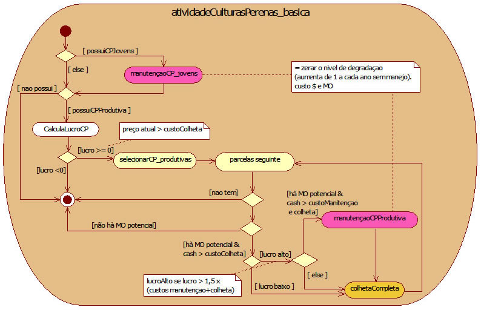 Activities of the priorities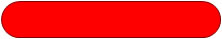 Activity diagram of the grower priority: 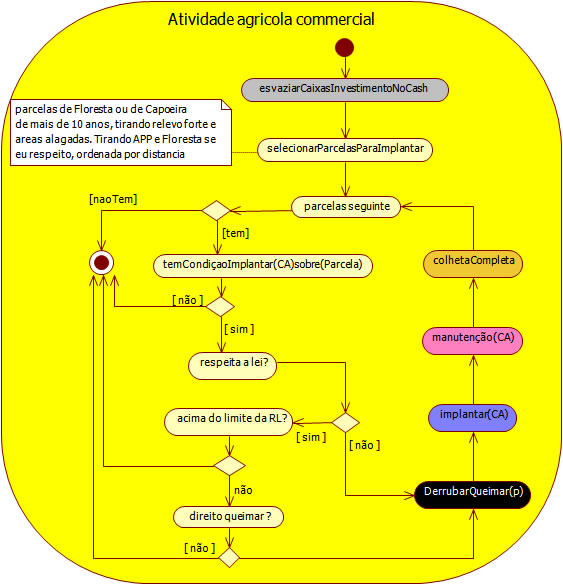 Activity diagram of the breeder priority: 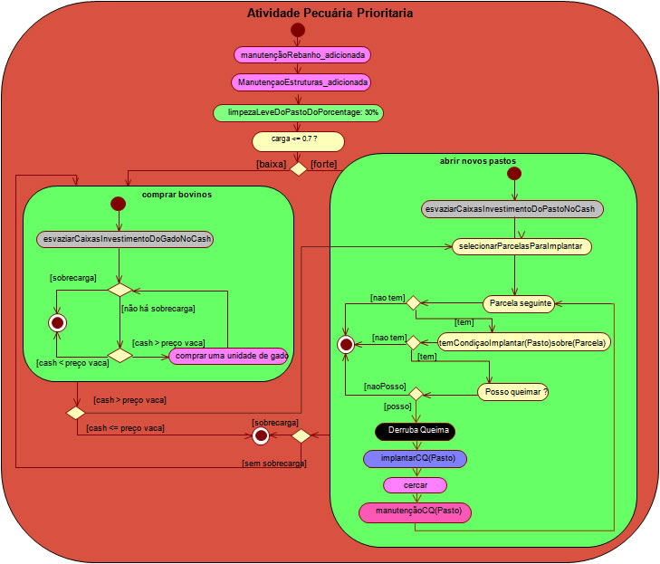 Activity diagram of the tree crop priority: 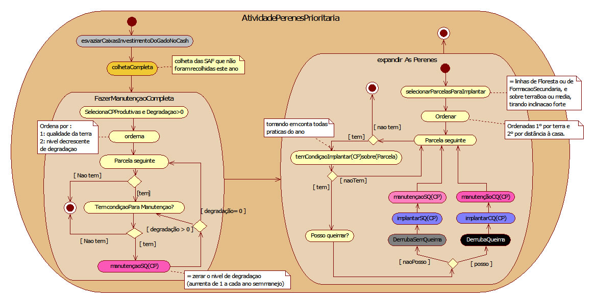 BalanceActivity diagram of the annual balance: 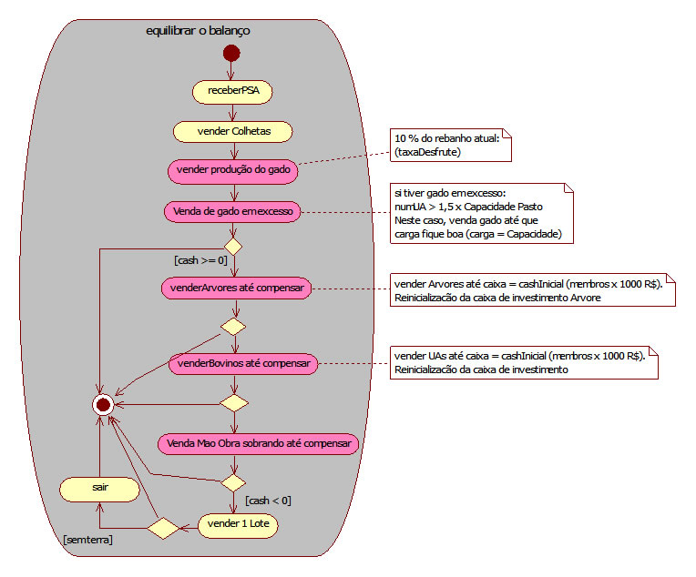 All the parameters and their values are available.
- Back to Amaz main page -Model Description - Go to Results
SoftwareYou can download the Cormas model source code (Cormas 2012). A quite similar report in portugues is available. For more information, contact the corresponding author |